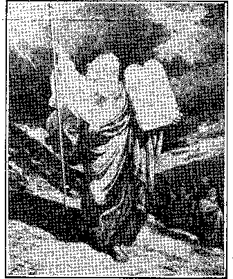

Vol. VIII.
BROOKLYN, N. Y.
No. 2
THE DIVINE LAW UNIVERSAL AND ETERNAL
ITS RELATIONSHIP TO ISRAEL’S TEN COMMANDMENTS AND THEIR SABBATH DAY
“The Law was given by Moses; but grace and truth by Jesus Christ.”—John 1:17.
TO suppose that there was no Divine Law governing Heaven and earth, previous to the giving of the Law at Mount Sinai at the hand of Moses, would be as unreasonable as to suppose that neither Grace nor Truth was known throughout the Universe until our Lord’s First Advent.
On the contrary, we may say that so surely as it is true that God Himself had no beginning, so true is it that Truth had no beginning and that Law had no beginning; for God’s righteous will has always been the Law incumbent upon all His creatures. There was a beginning to falsehood, and Satan is credited with being the father of lies. (John 8:44.) But since God is the Father of Truth, it had no beginning; for He was never untrue. So there was a beginning to lawlessness, or sin; and Satan is credited with being the first transgressor. But since God’s will, or Law, is the standard of righteousness, it follows that it, like God, has existed from eternity past and will extend to eternity future:
Since the government of God is universal and eternal, it follows that there never was a time nor a place without Law, nor a being not subject to the Divine Law or under its control. But God’s Law was made known at Mount Sinai, through Moses, in a different manner from that in which it had previously been made known.
In the creation of Angels, God had given them such intelligence as could distinguish the right from the wrong. Their minds were so properly balanced that right always appeared right, and wrong never could be mistaken for right. This capability of discernment on the part of the creature is said to be God’s “image,” which, when possessed, obviates the necessity of any written law. Adam, the first of the human race, was also created in God’s likeness, and had this Law of God written in the construction of his being, or, as it is sometimes said, written in his heart.
The Law given by Moses would have been entirely out of place in Heaven or in Eden before sin entered. With the Law of God (briefly comprehended in one word, Love—to God and all His creatures in fellowship with Him) written in their very beings, how strange it would have seemed to the angels if God had set up in Heaven the Mosaic Law tables or copies of them! Of what service could such a statement of the Law of God be to such beings, who already had a much higher conception of it? Moreover, such a presentation to Adam in Eden before his fall would have been similarly useless. Therefore it was not given.
But why was the Law given by Moses? Why was it not given until about twenty-five hundred years after the faM of Adam into sin and death? Why was it given at Mount Sinai? Why was it given to the nation of Israel, and not to all nations or to any other nation? Why was it written upon stone? Why that departure from the previous method of expressing it?
The mere reading of these questions, and a reflection upon the facts upon which they rest, should relieve the mind of many inconsistencies ■and prepare it for the answer.
Father Adam, having violated the Law of God—written in his being— has passed under its sentence—death. This death-sentence had affected him mentally and morally, as well as physically; and thus began the effacement from his heart of that power of discerning or intuitively knowing right from wrong. The fallen conditions favored the cultivation of selfishness, and exalted selfishness to be the rule of life, instead of love, as in God’s original creation.
The more selfishness came in and gained control, the more the law of Love was erased from Adam’s heart. And as the years rolled on the deterioration continued naturally from parent to child, until in Moses’ day it is safe to say that with the majority of the race the original Law was almost gone. A general picture of the race aside from. Israel is given by the Apostle with an account of just what led to such a dreadful condition of degradation. See Romans 1:21-32.
Purpose of the Decalogue.
God chose, or elected, to give the Law on tables of stone to the descen-

Moses Veiled—With the Law.
dants of His friend Abraham according to His promise that He would especially use and bless Abraham’s posterity. (Genesis 12:3; 18:15-18.) But, as though to insure men that the Hebrews were not naturally superior-to other men, God permitted them to go for centuries into slavery to the Egyptians, at that time the greatest nation of earth.
From this we conclude that the Law given at Sinai was given because the original law, expressed in Adam’s nature twenty-five centuries previous, had become almost extinct and unintelligible. It was given to a chosen people at the hands of an especially chosen leader. It could not have been written upon their hearts; for to do so would have implied the restoration of that nation to Edenic perfection; and this was impossible because the penalty under which that perfection was lost was death, which still rested upon Israel and upon all men, and would continue until a Ransom could be found for Adam—-and hence for all who lost life in him. —1 Cor. 15:21, 22; 1 Timothy 2:5, 6.
Significance of the Decalogue.
The best way to express the Law of Love to those who do not possess the spirit of love, or mental likeness to God, is as God indicated it in the ten commandments written in stone— “Thou shalt,” and “thou shalt not.”
This brings us to the question, Whv did God give the Law on tables of stone? Why did He not wait until the due time to send His Son to be our Ransom-price; and then, after He had redeemed or purchased all from the sentence of death, begin the work of Restitution of all things (Acts 3: 21)—the re-writing of the original Law in the human heart?—Jeremiah 31:31-34; Ezekiel 36:26.
The Apostle Paul answers this important question. He tells us that when God declared that He would bless all nations through Abraham’s Seed, He referred not to all of Abraham’s offspring, but to Christ Jesus who, according to the flesh, would be born of Abraham’s descendants; that for Christ, God would select a “Bride” or companion of many members, but all of one spirit with Him— to be joined with Him in the sufferings incidental to sympathy and obedience and, when complete, to be perfected with Him in glory and to share with Him the work of blessing all the families of the earth. (Galatians 3:16, 29; 1 Peter 1:11; Romans 8:17, 18.) Furthermore, St. Paul tells us that the due time for Christ to come and redeem the world must be before the selection of His “Bride”; for she must be redeemed before she could be called or chosen. But as a long interval lay between the Promise to Abraham and the “due time” for God to send His Son to redeem men, God purposed' a work with Abraham’s natural children, which would fill the interim between then and the coming of Jesus, the real Seed of Abraham according to the Divine Purpose.
This Law Covenant which the Lord proposed with Israel, Abraham’s natural children, would do them great good, even though they might thereby pass through some very severe experiences. It would not only keep them from sinking lower into degradation and losing the image of God as completely as some other nations, but in a few cases might even make the original Law more discernible. And not only so, but this Law given to Israel would be to some extent, a standard before the world. Thus Abraham’s natural seed might lift up a standard to the people and to a slight extent bless all nations, by calling a halt to the downward course and by reviving in all to some degree the dying influence of the original Law of Conscience.
Of this Covenant the Apostle declares, The Law “was added [to the Abrahamic Covenant] because of transgressions [because sin was spreading and men were retrograding very rapidly], till the [promised] Seed should come [until Christ came (not only Christ Jesus the Head, but also the Church His Body) to do the real work, the time for which had come] to whom the [Abrahamic Covenant] Promise was made.” “For the Law made nothing perfect”; and, moreover, “The Law which was [given] four hundred and thirty years after [the Covenant made with Abraham] cannot disannul [or in any manner change the terms or conditions of that Covenant], that it should make the Promise of none effect.”—Galatians 3:19, 17; Hebrews 7:19.
But this Covenant which God made with Israel was something more than even they could realize. His dealings with them were typical of His dealings future from their day. Their sin-offerings, for instance, typically took away their sins, and brought to the nation reconciliation to God for a year at a time: but, as the Apostle says, those sacrifices could not really cancel sin. “The blood [death] ©f bulls and goats could. never take away sin.” It was man that had sinned, man that had been sentenced to death; and the death of the animal at most only typified the death of the Man Christ Jesus, who gave Himself a Ransom for all.”—Hebrews 10:1-10;
1 Timothy 2:5,6.
And not only their sacrifices, but God’s dealings with the nation of Israel, seem to have a typical lesson, the reality of which reaches down either to the Gospel Age or beyond into the Millennial Age. (1 Corinthians 10:11; Romans 15:4.) From what we have shown foregoing respecting the Divine Law, which establishes the lines of right and wrong upon every question, and which, Hike its Author, is from everlasting io everlasting the same unalterable Law, we trust that our readers see clearly that the giving of the Law at Sinai had a special, peculiar significance of its own, incidental to the people to whom it was given. For further explanation see Tabernacle Shadows cf Better Sacrifices.
The Law Given at Sinai.
There was more done at Sinai than. is generally supposed. Not only was the Law written upon tables of stone given there, but a Covenant based upon that Law was there entered into between God on the one past, represented by that Law, and Israel on the other part—Moses being the mediator of the Law Covenant.
The Covenant was the important thing! God, who had recognized their Father Abraham and made a Covenant with him, for the fulfilment of which they had waited for centuries, had finally recognized them as Abraham’s children, had brought them out of Egyptian bondage with wonderful evidences of His favor, and had now brought them in their journeys by a special leading to Mount Sinai, and made a Covenant with them.
It was with hearts leaping with, joy of great anticipation that Israel accepted the proposal to become God’s covenant people. It does not seem to have occurred to them, however, that theirs was a different Covenant from the one made with Abraham.
Great confusion of thought has resulted from a failure to notice the point just made; namely, that the transaction was important, not because God began there to have a Law over His creatures—for we have seen that God’s Empire never was without Law—but it was important because there God made a Covenant with Israel according to the terms of which they were no longer to be treated as sinners, but to be accepted as God’s servants, if faithful to the requirements of that Covenant. The Law written upon tables of stone represented that Covenant; for every blessing under that Covenant was made dependent upon absolute obedience’to that Law.—Exodus 19:7,8; 34:28.
Hence in speaking of their Covenant it became customary to think and speak of the Law upon which everything depended. Thus throughout the New Testament, when speaking of that Covenant, the Apostle often calls it “The Law,” leaving the word “covenant” to be understood. Yet in every instance a glance at the language and the context shows unquestionably that the Law Covenant is meant, not merely the written Law.
For instance, the expression, “The Law made nothing perfect,” could not refer to the Law alone; for laws never ; make anything perfect. They merely show the perfect requirements.
The Law on tables of stone showed Israel God’s requirements, but it remained for the Covenant to try to make the people perfect by promising blessings for obedience and curses for disobedience to the Law. And this the Law Covenant failed to do; it made nothing perfect. It served to restrain sin and to show men some of their short-comings, but it could not lift any out of the mire of sin and out of the horrible pit of death. It could not give life. It merely left Israel under sentence of death, as they were before it was given: but (Continued on page 2, column 1).
O BiW Students monthly
Y. F. HUDGINGS, Editor
13, 15, 17, HICKS ST., Brooklyn, N. Y. Monthly-12cts. a year. Single copies lc.
An Independent, Unsectarian Religious Newspaper, Specially Devoted to the Forwarding of the Laymen’s Home Missionary Movement for the Glory of Good and Good of Humanity.
Ministers of the I. E. S. A. render their services at funerals free of charge. They' also invite correspondence from those desiring Christian counsel.
(Continued from page 1,.column 4.) THE DIVINE LAW. additionally bounden by it as a national contract. However, it was only a typical Covenant and its mediator was only a type of the one Mediator between God and man; and the blood of that Covenant typified the blood of the New Covenant.
Purpose of the Law Covenant.
God’s Covenant with Abraham was not hampered with a Law. It applied as sooii as Abraham entered Canaan —“In thy Seed shall all the families of the earth be blessed.” The Seed was promised and was sure, and so was the blessing. But not so the Law Covenant, made four centuries afterward with the fleshly seed of Abraham. The blessing which it promised was conditioned on obedience to a code of laws then given them. It said, “The man that doeth these things shall live by them.”—Romans 10:5; Leviticus 18:5.
Nor did it seem to occur to Israel that they might be unable to obey the Law perfectly. They promptly accepted the terms of the Covenant (Exodus 19:8; Deuteronomy 27:11-26), little realizing that it was a Covenant “unto death” (Romans 7:10), and not unto life because of their inability to obey perfectly its just requirements. Its promise of life was on terms easy enough for perfect men, although impossible for fallen men. But, having agreed to the terms, they were bound to them. Thus the Law Covenant “slew them,” or took from them the very hope of life it had helped to enkindle. (Romans 7:9-11.) Nevertheless, it served them well as a servant to bring them to Christ.
When Christ came He magnified the Law Covenant and made it honorable. Then it began to be manifest that none before Him had ever fully appreciated or obeyed God’s Law. Thus convinced of their own inability to secure eternal life by the terms of the Mount Sinai Covenant, those Jews of teachable mind, began to see the proffered righteousness of Christ, enabling them to accept the glorious invitation of Divine favor and jointheirship with Messiah in the Millennial Kingdom, upon condition of faithfulness in following in the footsteps of Jesus, their Redeemer. So the Law Covenant made nothing perfect. (Hebrews 7:19.) In the fullest sense, Jio one ever kept it but the perfect Man Christ Jesus (Romans 3:23); for the Law is the full measure of a perfect man’s ability.
Commandments Basis of Covenant.
The mind is cleared of much difficulty when it is discovered that the statements that Christ had blotted out the Law, “nailing it to His cross” (Colossians 2:14), and similar passages, do not mean that the Divine Law of the Universe, forbidding sin, ceased at the Cross. That Law has been over men, angels and all others of God’s intelligent creatures ever since they came into existence; and it will never cease. All is plain when in every text the word covenant is .supplied as it was evidently understood by those whom St. Paul addressed.
‘That the Ten Commandments were the basis of the Covenant made with Israel at Sinai is clearly attested by Scripture. “And he [Moses] was there with the Lord forty days and forty nights. And he wrote upon the tables the words of the Covenant, the Ten Commandments.” (Exodus 34: 28.) “And he declared unto you His Covenant which He commanded you to perform, even the Ten Commandments, and He wrote them upon two tables of stone.”—Deuteronomy 4:13, 14; 9:11,15.
Redeemed From the Curse of the Law Covenant.
It has escaped the attention of many that, while Israelites had many advantages every way under their Law Covenant (Romans 3:1, 2), yet each one who failed to meet all the requirements of that Law Covenant -came under a curse, or sentence, not upon others. Thus it is written, “Cursed is every one [every Israelite] that continueth not in all the words of the Law [Covenant] to do them.” —Galatians 3:10; Deuteronomy 27:26.
The Apostle shows that this curse was only upon those under that Covenant, saying, “Whatsoever the Law [Covenant] saith, it saith to them that are under the Law [Covenant].” (Romans 3:19.) Moses also made the same declaration. (See Deuteronomy 5:2,3.) Indeed, no other arrangement would have been just; for the blessings of that Covenant and its promises of life were only to tne one nation. (Romans 9:4.) How, then, could its curse extend beyond the nation which enjoyed its favors and privileges?
The blessings of that Law Covenant were earthly, and such also were its curses. With one exception, noted below, neither blessings nor curses related to the everlasting future. The future had already been settled for Israel and all others of the race of Adam, in the death sentence pronounced in Eden. Nothing short of the Ransom-price—the Corresponding Price which our Lord Jesus gave long afterward—could settle that original sentence and secure a complete release from the sentence of death. The sin-offerings of Israel’s Day of Atonement were not of permanent value, but only for a year in advance, and were therefore repeated yearly. These blessings and curses of the Law Covenant were very particularly explained to Israel.—Deut. 28:1-68.
This Covenant included every member of the nation of Israel, so that they shared in common the blessings and the curses. There was a provision, however, for one individual; namely, that the man who would fully obey all of the requirements of the Law should live—be guaranteed lasting life. (Leviticus 18:5.) However Israel may have imagined it possible for all or for many of the nation to thus gain life everlasting, we can see that God never had such expectations concerning them. He knew from the beginning, what He has taught us by experience, as well as by the inspired words of the Apostle that, “By the deeds of the naw shall no flesh [i. e., none of the fallen race, needing justification] be justified in God’s sight.”—Rom. 3:20.
“The Man Christ Jesus” (1 Timothy 2:5), who obeyed the Law absolutely, was the One in the Divine Purpose for whom the provision was made— that “He that doeth these things shall live.” He consequently had a right to life everlasting and therefore might have asked for, and might have received, more than twelve legions of angels to defend Him from those who sought His life. But He laid down his life. The one death, begun at Jordan and finished three and a half years after at Calvary, accomplished two things—one for Israel only, the other for the whole world.
Since the Children of Israel, as well as the other nations, were Adam’s posterity they, as well as others, shared his sentence of death, and were redeemed by our Lord’s offering of Himself a Sin-Offering and Corresponding-Price for Adam and those who lost life in Adam. (Romans 5:12, 18.) But since Israel alone, and no other nation or family or people of earth, had been brought under the terms of the Law Covenant made with them at Mount Sinai, therefore, only Israelites required to be “redeemed from the curse of the Law [Covenant].”—Gal. 3:13.
Moses’ Position Unique.
That the “one Man,” Christ Jesus, could justly redeem our race is stated by the Apostle and is clearly evident when we see that all men were sentenced in the one man Adam. But how could one man redeem the multitudinous nation of Israel from the curse of their Law Covenant?
We answer that there is a point connected with Israel’s Covenant that few have noticed. It is that God dealt with only one man in connection with the making of that Law Covenant; and that man was Moses, who stood in the position of a father to the whole nation, the nation being regarded and treated as children under age. (Numbers 11:11-15.) The Lord talked to Moses in the Mount. The Lord gave the tables of the Law to Moses. And Moses spoke to the people, gave them the Law and bound them by the terms of the Law Covenant:
“Moses alone shall come near the Lord.”—Exodus 24:2.
“As the Lord spake to Moses, so did the Children of Israel.”—Numbers 5:4.
“The people cried to Moses, and Moses prayed to the Lord.”-Num. 11:2.
“God sent Moses, His servant.”— Psalm 105:26.
“They envied Moses in the camp.”— Psalm 106:16.
God said that He would destroy them, had not Moses His chosen stood before Him in the breach.—Psalm 106:23.
“Remember ye the Law of Moses My servant.”—Malachi 4:4.
“Moses hath in every city them that preach him.”—Acts 15:21.
“Did not Moses give you the Law?” ■—(Christ) John 7:19.
“What did Moses command you?”— (Christ) Mark 10:3.
“One accuseth you even Moses, in whom ye trust.”—(Christ) John 5:45.
All Israel were “baptized unto [into] Moses, in the cloud and in the sea.”—1 Corinthians 10:2.
“He that despised Moses’ Law died without mercy.”—Hebrews 10:28.
“The Law was given by Moses, but grace and truth came by Jesus Christ.” —John 1:17.
So thoroughly was the one man Moses the representative and typical father of the nation of isiuel, that God could and did propose its destruction and the fulfilment of all His engagements with Moses’ family instead. (Exodus 32:10, 31, 32.) It was thus, as God’s representative on the one hand, and as Israel’s representative on the other, that Moses could be and was the Mediator of the Law Covenant between God and that nation.
When the Man Christ Jesus, by full obedience to the Law Covenant, became entitled to life everlasting under its provisions, He had the right to “Moses’ seat”—the right to supersede Moses as the lawgiver and representative of that nation. Of Him Moses bore witness, saying, “A Prophet shall the Lord your God raise up unto you like unto me. Him shall ye hear in all things.” By fulfilling the requirements of the Law Covenant and by His obedience even unto death, Christ became the Heir of its promise of life, and the Mediator of the New Covenant, based upon that better and everlasting Sacrifice for sins, which therefore needed not to be repeated yearly, and which will be effective, not for Israel only, but for all the families of earth; for “this Man,” “the Man' Christ Jesus, gave Himself a Ransom for all.” Hence this Gospel of the New Covenant was for “the Jew first and also for the Greek (or Gentile).” Thus the one Sacrifice finished at Calvary did a special work for Israel, and will do a general work of redemption for the world, including Israel, in sealing the New Covenant and making it operative for all mankind. [For full explanation see Studies in the Scriptures, Vol. V., “The Atonement.”]
“Christ the End of the Law.”
Thus seen, the expression, “Christ is the end [fulfilment] of the Law [Covenant] for righteousness [justification] to every one that believeth” (Romans 10:4), can apply only to Jews who by faith have accepted Christ as their Redeemer.f It cannot apply to others—neither to those who never were Jews, and who consequently were never under that Covenant, nor to those who still trust in Moses’ Covenant and who are still vainly seeking life by obedience to its provisions, laws, etc.
Israel as a nation is still bound by that Covenant which they at first supposed would bring life, but which experience proved could bring them only death because of the weakness of their flesh and their inability to fulfil its requirements expressed in its Law of Ten Commandments. There is only one door of escape from it; namely, by accepting Christ as their Redeemer. God shut them up to this one and only hope (Galatians 3:23); and He promises that by and by, when, the Gospel Church, the Body of Christ, has been selected, He will open their blind eyes and cause them to see Christ in His true character—as their Redeemer from sin' and their Deliverer from death and their Covenant of death.— Romans 11:25-29.
Christ “came unto His own [people, the House of Servants, under the bondage of the Law Covenant, offering the worthy ones favor and liberty under the Covenant of Sacrifice], and His own [people] received him not; but as many as received Him, to them gave He liberty [privilege] to become the sons of God [with all the proper privileges or liberties of sons], even to them that believe on His name.”— John 1:11, 12; Psalm 50:5.
No wonder, then, that the Apostle sought so earnestly to guard the new Gentile converts from becoming Jews and seeking life under the Law Covenant, by which neither he nor his nation had been able to profit! No wonder he exhorted them to stand fast in the liberty of Christ and His gracious arrangements under the Covenant of Sacrifice!
It was in view of this danger of their losing faith in” Christ’s finished work and trusting for salvation to their own efforts to keep the Law Covenant by works, that St. Paul even prohibited the circumcision of Gentile converts, although he approved of it for Hebrews, to whom it was given as a symbol and rite long before the Law Covenant was made. Hence the remark that “the Gospel to the circumcision” was especially supervised by St. Peter, while the Gospel to the uncircumcision, the Gentiles, was especially the mission of St. Paul. (Galations 2:7, 8, 14-16.) It will be quite a help in the study of the Scriptures to observe that the Apostles often refer to themselves as having been under the Law Covenant and subsequently freed from its bondage; but to Gentile converts as not having passed through such an experience.—See Galatians 2:17; 3:3,13, 14; 5:5, 6, 8-10; Ephesians 2:11-19.
See Studies in the Scriptures, Vol. VI., “The New Creation,” Study 7.
"Free from th? Law.”
The Ransom was given FOR ALL mankind, but its benefits are applicable only to those who believe. Thus far the believers are only a few, compared with the mass of mankind. These have escaped from all condemnation of all broken laws; while the remainder, the world in general, still continue under the original condemnation, and Israelites who have not come to Christ are still condemned by Moses’ Law Covenant. “He that believeth is passed [reckonedly] from death unto life (John 5:24), while “he that believeth not is condemned already.” (John 3:18.) He was condemned six thousand years ago; and, if a Jew, he was additionally bound by the Law Covenant, and has not escaped the condemnation that is on the world. (Romans 5:16.) The only ones who have escaped this condemnation, so long upon all, are referred to by the Apostle Paul (Romans 8:1): “There is now no condemnation to them which are in Christ Jesus, who walk not after the flesh but after the spirit."
These are the free ones, free from all laws and all penalties—free indeed. “If the Son shall make you free, ye shall be free indeed.”—John 8:36.
But can it be that God has released these entirely from both the Law given in Eden and that given at Sinai? Just so! Being justified by the death of Christ, and released from their former condemnation, and having received His spirit of love for God and obedience to God, so long as they are in Christ they are free—free to abide in Him, by continued submission to His will, the essence of which is LOVE to God and to man. All who come into Christ submit themselves to His will and voluntarily make it their Law; and those who willingly violate this law thereby cease to “abide in Him” and will be “cast forth” as dead branches. (John 15:6.) Through Him our best endeavors to do His will are acceptable; and we have thus passed out of condemnation to death into justification to life so long as we abide under the blood of Christ our Redeemer. In no other way could any be accepted by God; for the Law given in Eden was one which required absolutely perfect obedience, and that given at Sinai demanded the same. And since we know that God could not give an imperfect Law (Rom. 7: 12); and that we could not fully obey a perfect one, we see the necessity for our being freed from all law and accepted in the merit of Christ.
Hence we conclude that those in Christ, whether they were jews or Gentiles, are in no sense under the Law given at Sinai, graven upon stones, termed the “Ten Commandments,” nor to the ceremonial attachments relating to typical feasts, sacrifices and services.—Hebrews 9:1.
The Law on Tables of Stone.
The sanctified in CHRIST JESUS need no such commands. Love to God and men, laid down by our Lord and the Apostles, is the only rule under which the New Creature in Christ is placed; and it is the very essence of this new mind—the spirit, or mind, of Ghrist.
Look singly at the commandments given to fleshly Israel, and judge whether it would not be useless to address such commands to the saints.
-
I. “Thou shalt have no other gods before me.” What saint would think of such a thing?
-
II. “Thou shalt not make unto thee any graven image, nor the likeness of any form that is in Heaven above, or that is in the earth beneath, or that is in the water under the earth; thou shalt not bow down thyself unto them nor serve them; for I . . . am a jealous God, visiting the iniquity of the fathers upon the children, unto the third and fourth generation of them that hate Me; and showing mercy unto thousands of them that love Me and keep My commandments.”' For whom is such a law needful? Surely not for the saints, who love the Lord with all their heart, soul and strength, and who are laying down life itself in His service!
-
III. “Thou shalt not take the name of the LORD thy God in vain; for the LORD will not hold him guiltless that taketh His name in vain.” Again we remark, surely none of the saints will have any desire to blaspheme or profane their Father’s name, but the reverse; they are laying down their lives to glorify His name.
-
IV. This we will examine last.
V. “Honor thy father and thy mother; that thy days may be long upon the land which the Lord thy God. giveth thee.” This is distinctly an earthly promise of the land, while the promise to the saints is not long life here but hereafter. Those who sacrifice life, lands, etc., become, in Christ, heirs to the Heavenly promises. Having the Spirit of Christ, they delight to honor their earthly parents, but especially do they delight to do the will of their Father in Heaven.
VI. “Thou shalt do no murder." Do not the saints delight to bless others and to do good, even to those who ''spitefully use them and persecute them? If so, where would be the propriety of telling them that they must not murder—must not do the thing farthest from their desire? It would be a useless command.
VII. “Thou shalt not commit adultery.” The sanctified in Christ Jesus, “who walk not after the flesh, but after the Spirit” of Christ, could not thus wrong others.
VIII. “Thou shalt not steal.” Do the saints desire to steal? Do they desire to defraud others? Is it not rather their spirit to “labor, working with their hands the thing which is good, that they may have, to give unto the needy”?—Ephesians 4:28.
IX. “Thou shalt not bear false witness against thy neighbor.” ’ How could one of the “sanctified in Christ Jesus” thus injure his neighbor? It would be entirely foreign to the Spirit of Christ, the spirit of Truth, and would prove that the one who knowingly and willingly bore such false testimony had not the Spirit of Christ and was “none of His.”—Romans 8:9.
X. “Thou shalt not covet thy neighbor’s house, thou shalt not covet thy neighbor’s wife, nor his manservant, nor his maid-servant, nor his ox, nor his ass, nor anything that is thy neighbor’s.” Covetousness is wholly foreign to the spirit of Christ; and to that extent that the Spirit of Christ dwells richly in His members they will be free from covetousness. The spirit of sacrifice having in the saints taken the place of self-love, covetousness is forestalled.
The preface in Exodus 20:2 shows that these Ten Commandments were giveh only to Israel after the flesh: “I am the Lord thy God, which brought thee out of the land of Egypt, out of the house of bondage.” So, too, in repeating them, Moses declares (Deuteronomy 5:15): “Hear, O Israel, the statutes and judgments which I speak in your ears THIS DAY that ye may learn them and observe to do them. The Lord our God made not this Covenant with our fathers, but with US, even us, who are all of us here alive this day. The LORD spake with you face to face—saying,” etc., etc.—See also Ezekiel 20:10-13; Nehemiah 9:12-14.
AU these commands were proper and suitable enough for Israel. (Deuteronomy 5:2,3,5-21.) They would have been suitable for any fallen man, but are surely inappropriate to any New Creature in Christ, whose very nature, as a New Creature, is to do right, yet who, because of the weakness of the flesh, cannot do perfectly, though he desire and endeavor to do so. But although we can easily keep the outward letter of this Law, yet under our Lord’s teachings we see that? to keep it in full really means more than its surface indicates; that he who hates a “brother” has the murder spirit, and is a mur-. derer; he that desires to commit adultery, lacking only the opportunity, is in heart an adulterer (Matthew 5: 28); and he who loves and serves money, and who spends time and talent for it more - than -in God’s service, is an idolater.
Our Redeemer’s teaching regarding the obligations implied by the Law is—“Thou shalt love the Lord thy God with all thy heart, all thy mind, all thy soul and all thy strength; and thou shalt love thy neighbor as thyself.”—Matt. 22:37, 38.
From this we see that even we who are in Christ, with all our holy desires and aims, could not keep perfectly the spirit of that Law, according to this, our Master’s interpretation ; for our new mind is hindered by the weakness of the sin-degraded and marred earthen vessel—the flesh. We find it impossible to rid ourselves entirely of inherited selfishness, so as to be able to love our neighbor as ourselves, or to love and serve God with all our hearts and talents, much as our new minds might choose and seek to obey this, the spirit of the Law. It is only because we are dealt with by God according to the conditions of the Covenant of Grace in Christ that the Apostle could say that our best heai4-endeavors to fulfil this Law of Love are accepted as a perfect fulfilment; and all we lack is continually compensated for out of the fulness of Christ, which is imputed to us. “Ye are not under the Law, but under grace”—favor. (Romans 6:14.) You are acceptable with God, not because there is no fault in you, but because favor covers your unwilling imperfections of thought, word and deed.
The Fourth Commandment of Israel’s Covenant.
“Remember the Sabbath day, to keep it holy. Six days shalt thou labor, and do all thy work; but the seventh day is the Sabbath of the Lord thy God; in it thou shalt not do any work, thou, nor thy son, nor thy daughter, thy man-servant, nor thy maid-servant, nor thy cattle, nor thy stranger that is within thy gates; for in six days the Lord made Heaven ajid earth, the sea, and all that in them is, and rested the seventh day; wherefore the Lord blessed the sabbath day and hallowed it.”
This command merely enjoins Idleness on the seventh day of each week. It does not say to cease from ordinary work and engage in religious work, as many of its advocates seem to suppose; but, on the contrary, it prohibits all kinds of work. Many who think themselves bound by this command, neither rest on the seventh day nor on the first day of the week, which without authority they make an effort to keep instead of the seventh day which the Lord appointed for those under it. On the contrary, to very many the first day is as busy a day as any. The ruling under the Law was that any one who even picked Up sticks or kindled a fire was a violator of this command, and must, be put to death. (Numbers 15:32-36.) How many who claim to keep this commandment do far more work in the way of cooking, etc.—they, their sons, and their daughters, their manservants and maid-servants I (See Exodus 35:3.) If that Law is now in force and has by any means extended beyond the Israelites (on whom alone it was put); so as to cover Christians, then every Christian violates it re-
peatedly, and is deserving for each offense; for “they lated Moses’ Law died mercy.”—Hebrews 10:28.
But though our views on
of death that vio-without
ject differ widely from those of most Christian people, we are very glad that one day of each week is set apart for rest from business, without regard to which of the seven days is thus observed, or by what law or lawgiver it was originally appointed. We greatly enjoy the day, and think it not only a blessing to those who use it for worship and study, but also for those who use it merely as a day of rest from toil and recreation to enjoy the beauties of nature, or to visit their friends and families as they cannot do on other days. And we are especially pleased that the day set apart by the Government under which we live is the First Day of the week, because of the same blessed memories and associations which gave that day a special sacredness to the Church in the days of the Apostles.
But for two reasons we totally dissent from the idea of the Sabbath common to the majority of Christian people. First, because if their claim that we are under the Law of which the Sabbath day observance was a part be true, the day they keep as a Sabbath is not the day mentioned in that command. They observe the first day of the week, while the command designated the seventh day. If the Fourth Commandment be binding at all it, as well as the other commandments, is binding as stated, and cannot be changed. Second, if we were bound to the Law, the keeping of the Sabbath in any other than the strict way in which its keeping was therein prescribed is inconsistent. If the command is binding upon us, the manner of its observance, in its every minutia, is no less binding. If its to the other the gracious promises of God through the Prophets, and the explanations of some of these which tne Lord had given in person, seeking yet fuller understanding of the same under the leading of the Holy Spirit (Christ’s Representative), their Guide into all Truth as it became due.
strict significance has passed away, surely whatever destroyed its strict interpretation destroyed the command , _____ _______ ,______________
entirely. Therefore, if “observed at The Roman Catholic Church does all, it should be observed with all its former strictness, and it should be observed on the day then prescribed.
The only proper reason for the less strict observance of the day, or for the substitution of another day for the one originally designated would be an order from God Himself to that effect. Men have no right to alter or in any wise amend God’s Laws; no, not even if an angel from Heaven sanction the change. But God did not change that Law. It stands exactly as it was given. If, as claimed by some, it was altered in any degree, or made applicable to any other people than the people of Israel, the evidence should be no less clear and positive than that of its original giving at Mount Sinai. But no such evidence exists of its change to another day, or to another people, or of any relaxation of its original severity.
Neither did our Lord or the Apostles ever authorize any such change. They declared that the Jewish Law (which included the command relative to the seventh day) was to be superseded by the antitypical New Law Covenant, which during the Millennium will be in operation toward all who accept Christ. The Apostles used the seventh day as a time for preaching Christ, as they used every day in the week—especially because on that day the Jews, their most hopeful hearers, met for worship and study. But the Apostles nowhere recognized the seventh day Sabbath as a day of rest, as the Jewish Law Covenant had enforced it. On the contrary, they taught (Romans 14:5-8) that any and all days are acceptable for good work done in the service of God and for the benefit of fellow men.—Matthew 12:10, 12.
The Lord’s Day.
Some claim that the (first day) Christian Sabbath was introduced by an edict of one of the popes. But this is a mistake. The practise had its start in the fact that it was on the first day of the week that our Lord arose from the dead; and that upon that day and evening He met with His disciples, and expounded unto them the Scriptures, until their hearts burned within them. What wonder that, without any command to do so, they thereafter loved to meet together frequently on that day, to reneat the simple meal, the giving of thanks and the breaking of bread. Then they could recount one
For a time both days were observed by Christians, the seventh day from Jewish custom (and because it furnished the best opportunity for reaching devout Hebrews, the class most likely to be interested in the Gospel) and the first day in commemoration of our Lord’s resurrection. Ignatius, A. D. 75, in his writings mentions some approvingly as “no longer Sab-batizing, but living in observance of the Lord’s day, on which also our life sprang up again.”
The earliest record found in Scripture of the use of the name “Lord’s-day” for the first day of the week is in Revelation 1:10 (A. D. 96). And, says The Encyclopedia Britannica (first-class authority), “by that name it is almost invariably referred to by all writers of the century immediately succeeding Apostolic times. . . The first writer who mentions the name of Sunday is Justin Martyr. This designation of the first day of the week, which is of heathen origin, had come into general use in the Roman world shortly before Justin wrote. [Second Century A. D.] . . . As long as the Jewish-Christian element continued to have any prominence in the Church a tendency more
strong to observe Sabbath as Sunday would, of course, pre-
The earliest observance of
______ the Emperor Constantine, 321 A. D., enacting that all courts of
Vail. . . . iuc ctuuesi uuBervaiite in Sunday as a legal duty is a Constitu-justice, inhabitants of towns and work-shops were to be at rest on Sunday, with an exception in favor of those engaged in agricultural labor.”
But it will be noted that Emperor Constantine’s decree
It is therefore a misstatement to say that Pope Gregory or any other pope first by decree instituted Sunday or the Lord’s day as taking the place of the Jewish seventh-day Sabbath. The Decretals of Gregory do enjoin Sunday keeping, saying, “We decree that all Sundays be observed, from vespers to vespers, and that all unlawful work be abstained from, so that in them trading or legal proceedings be not carried on.” in 321 A. D., while Gregory did become pope until 590 A. D.;
pvJJC U<7U XI. JLZ. , Uhd
Gregory refers to the fact that the
and other civil rulers preceding him.
work prohibited was already unlawful; hence his decree is merely confirmatory of the laws of Constantine not now and, so far as we know, never did insist upon a strict observance of Sunday. In Catholic countries today both priests and people attend service in the forenoon, and give up the afternoon to various
pleasure—in beer-gardens,
Influence of the Law among Early Christians.
Many Christians do not realize the conditions which existed in the Church in the beginning of the Gospel Age. The Jews as a nation had been typically justified from the Adamic curse, or condemnation, by typical sacrifices, and put under the Law given at Sinai, as a Covenant under which, if obedient, they were to have life. But the Law proved valueless to them so far as giving them the hoped-for life was concerned, though it taught them some good lessons. All the other nations, known as Gentiles (heathens), were still under the original condemnation of Eden.
Consequently, when our Lord came, both Jews and Gentiles were under condemnation to death—the Jew by the Law from which he had expected so much, but with which he was unable to comply, because of the flesh; and the Gentile by the original sentence upon Father Adam, from which he had in no sense escaped, not even typically as the Jew had. But the Redeemer whom God provided was sufficient for both, and reconciled both unto God in one body by the cross.— Ephesians 2:16.
The Jewish converts, who composed the majority of the early Church, could scarcely realize the greatness of the change from the bondage of the Law Covenant to the liberty wherewith Christ makes free. Therefore they were continually adding Christ’s teachings and His law of Love to their Mosaic Law, thus adding to their already heavy burden, instead of accepting the sacrificial death of Christ as the atonement for their sins under the Law and as the end of the condemnation of that Law Covenant. (Romans 10:4; 3:20, 28.) It is not surprising, when we remember their early prejudices in favor of the Law, that the Spirit of Truth was able to guide them but slowly into the full truth on the subject. Even the Apostles were slow to learn; and we find St. Peter so slow to follow the leading of the Spirit that he had to be taught by a special vision that Gentiles ne° 'ed no longer to become Jews and to conform to the Law of Moses before they could share Divine favor; but that they had access to God through faith in Christ as their Redeemer and a full consecration of themselves to the will of God.—Acts 10:9-18; 11:4-18.
Ip Over 8,000,000 Copies In Circulation—19 Lan-X guages—Handsome, Embossed Cloth.
Studies in the Scriptures” by Pastor Russell
; vol.
J
I " VI. “The New Creation”
640 pp.
750 pp.
STUDENTS ASSOCIATION
Brooklyn, N. V., or
London, England.
. I. “The Divine Plan of the Ages”.. .384 pp.
II. “The Time Is at Hand”..........384 pp.
III. “Thy Kingdom Come”............384 pp.
IV. “The Battle of Armageddon”.....688 pp.
V. “Atonement Between God and Man”

1
these things, they held their peace and glorified God, saying, Then hath God also to the Gentiles granted
Some complained to the other Apostles and brethren about St. Paul’s recognition of Gentiles; and this brought the question before them all, and led to an investigation of God’s dealings in the matter. “When they had heard ance unto life.”—Acts 11:18.
earliest, and had to oppose ______
among the Apostles less strong and ’ less spiritually clear-sighted. (Galatians 2:11.) Jerusalem was long considered the center of the Christian re
St. Paul, most easily led Spirit, got. clear views on the ligion, the largest number and oldest believers and the Apostles living there. And as St. Paul’s views of the changed condition of things became clearer and clearer, he did not hesitate to preach boldly what he saw to be dispensational truth. Then some prejudiced ones in the Church of Antioch desired to know whether the brethren at Jerusalem would concur in the advanced views. Thereupon, St. Paul, Barnabas and others went up to Jerusalem to lay the matter before the brethren and to bring back a report.—Acts 15:1, 2.
The great debate and examination of the question on all sides followed. St. Peter and St. James, finally agreeing with St. Paul, influenced the entire Council. St. Peter reminded them of God’s wonderful dealing with Cornelius, who was justified and made acceptable to God through faith in Christ, and not through keeping the Law, and urged, “Now, therefore, why tempt ye God, to put a yoke [Moses’ Law] upon the neck of the disciples which neither our fathers nor we were able to bear?” St. James said, “My sentence is that we trouble not them which from among the Gentiles are turned to God.” Then the Council so ___
decided, and sent a message to the confused Gentile believers, saying:
“We have heard that certain ones who went out from us [here] have troubled you with words subverting your souls [destroying your faith], saying, ‘Be circumcised and keep the Law’—to whom we gave no such commandment. ... It seemed good, to the Holy Spirit and to us to lay upon you no greater burden than these necessary things: That ye abstain from meats offered to idols, and from blood, and from things strangled, and from fornication.” (Acts 15:9-29.) And these suggestions were given as advice, and not as so much of the Mosaic Law, with penalties attached. The Law Covenant a Ministration of
Death.
The Apostle Paul’s Epistle to the Galatians, who had been Gentiles, was written expressly to counteract the influence of Judaizing teachers who mingled with the believers of Galatia and endeavored to subvert the true faith in Christ by pointing them away from the Cross of Christ, to a hope of acceptance with God by keeping the Law of Moses in connection with faith in Christ—thus making the Covenant of Sacrifice and the New Covenant merely additions to the Law Covenant. This he calls “another gospel,” yet really not another; for there can be but one. Hence it was a perversion of the real Gospel. (Galatians 1:7-9.) And here St. Paul indicates that he knew that the Apostles at Jerusalem had at first only a mixed Gospel, and that he went up to see them on the occasion mentioned in Acts 15:4, by revelation, to communicate to them that fuller, purer, unmixed Gospel, which he had been able to receive. And he says he communicated it to them privately, lest their reputation should hinder them from re-
Continued on page 4, column 1.)
NOW POST.
ONLY PAID f
for the entire set of six books * together with one year’s sub-scription to Pastor Russell’s semi-monthly journal, The f Watch Tower. Order to-day. INTERNATIONAL BIBLE f
(Continued from page 3, column 4.)
THE DIVINE LAW.
ceiving the Truth; and even then ...some false brethren, spies, sought to (compel Titus, a Greek, to be circum-cized.—Galatians 2:2-5.
It is further along in this same Epistle that St. Paul tells of. St. Pe-' ter’s vacillation on the question of the . Law (chapter 2:11-16) and his words of reproof to St. Peter—We who are Jews by nature, knowing that a man is not justified by the works of the Law, but on account of faith in Christ, even we have believed in Christ that we might be justified by faith in Christ, and not by obedience to the . Law. Why, then, should we attempt to fetter others, or longer bind our-- selves by that which has served its purpose, in bringing us to Christ and the fellowship of His sufferings and coming glory ?
, “O foolish Galatians! who has deluded you? As many as are trusting to obedience to the Law are under its condemnation or curse. Christ hath redeemed us [Israelites] from the . curse of the Law, that the blessing of Abraham might come to the Gentiles through Christ Jesus, and that we [Israelites] might receive the promise of ■the Spirit through faith.” And surely God’s Covenant with Abraham, made four hundred and thirty years before . the Law was given, cannot be an-- nulled by that Law.—Gal. 3:1,10,13,17.
Next the Apostle answers a sup-posed inquiry as to what was the ob-ject of the Law, and why it was given, - if not necessary to the attainment of ’ the Abrahamic Promise. He says that ' the Law was added because of sin, to : manifest sin in its true light—that ' sin might be seen to be a great and ■ deep-seated malady. The Law was a ' pedagogue, or servant, to bring to ' Christ all Israelites w’ho desired to • learn the true way of life.—Galatians ‘ 3:24; Matthew 11:28-30.
As children are under nursery laws ' and subject to teachers until an ap-.. pointed time, so were we [Israelites] ..' under the Law, and treated as ser-* vants rather than as sons. We were kept undqr restraints, though we were the heirs through whom, according to the Promise, others were to be blessed. But in the fulness of time A God sent forth His Son, made of wo-•J man, made under the Law, to redeem them that were under the Law that •4, we [Israelites], being liberated, might f receive the adoption of sons. And so i also, “because ye [who were not un-der the Law, but were Gentiles, or heathens] are [also now] sons, [therefore] God hath sent forth the Spirit of His Son into your hearts.” We -^-W'ere sons under tutelage, and you ‘ were aliens, foreigners and strangers, but now you and we, who are accepted of God in Christ, are fully received into sonship; and neither of us is subject to the Law.—Galatians 4:1-7.
Tell us, you that desire to be under the Law Covenant, Do you not understand what it is? It is a bondage, as allegorical!} shown in Abraham’s two sons. Abraham here is a figure of God; and Satah, the real wife, is a figure of the real Covenant of blessing, out of which The Christ should come as Heir of all, to bless the •world. For a long time Sarah was barren. So, too, for a long time the original Covenant of God [made with Abraham—“In thy Seed shall all the nations of the earth be blessed”] brought forth no fruit—until Christ Jesus. Hagar, the servant of Sarah, in the meantime was treated as Sarah’s representative, and her son as the representative of Sarah’s son. Hagar represented the Law Covenant, and her child Ishmael represented fleshly Israel.. For a time they represented tne true Covenant and the true Seed of Blessing, though they were always servants—child as well as mother. When the true son of the real wife, the heir, was born, it was manifest that the son of the bondwoman was not the heir of Promise. And to show typically that the Law Covenant was not to have any rule over the spiritual sons of God, Hagar was not allowed to become the governess of Isaac, but in his interest was dismissed.—Galatians 4:21-31; Gen. 21:10.
The Apostle’s argument, based on this allegory, is, that we, brethren, as Isaac was, are the Seed to whom the Promise was made. We are not the children of /the bondwoman, the Law Covenant, but children of the original, Abrahamic Covenant, born free from the slavery and conditions of the Law Covenant. And not only were we so born, but the Law is entirely put away from us, and has nothing whatever to do with us. “Stand fast, therefpre, in the liberty wherewith Christ hath made us free, and be not entangled again with the yoke of bondage”—the Law Covenant. “If ye be led of the Spirit, ye are not under the Law [Covenant].—Galatians 5:1, 18.
But St. Paul asks. “Shall we continue in sin [wilfullv], because we are not under the Law [Covenant]?” (Ro-inans 6:15.) Shall we take advantage of our liberty to break away into more sin—because we are sons and heirs, and no longer commanded as servants—Thou shalt and Thou shalt
not? No, no; as sons, begotten of the Spirit, partakers of the Spirit of Holiness, the Spirit cj The Truth, we delight to do our Father’s will; and the Iqw of obedience to His will is deeply engraven upon our hearts. (Hebrews 8:10; 10:15, 16.) We gladly sacrifice our all, even our lives, in opposing sin and error, and in forwarding righteousness and truth. Hence we answer emphatically, “God forbid!” We will not take advantage of our liberty from the Jewish Law Covenant to commit sin. But if any man should think to do so, let him remember that only those led by the Spirit of God are the sons of God.—Romans 8:14.
We are not under the Law Covenant, but under Divine favor expressed in the Covenant of Sacrifice; and not only so, but being justified and reconciled to God through the blood of Christ, we have gone further and accepted the High Calling, the “Heavenly Calling,” and have consecrated our justified lives—“even unto death”—and been accepted as New Creatures, members of the Body of Christ. Thus we are heirs of the Abrahamic Covenant. (2 Corinthians 5:17; Galatians 3:29.) Hence, so far from desiring to use our liberty to indulge in sin, we, having God’s Spirit, detest sin, love righteousness and delight ourselves in the “Law of Christ” —Love. Christ’s word is pur Law— not a Law of bondage, but of liberty. “Whoso looketh into the perfect Law of Liberty and continueth therein [free], being not a forgetful hearer, but one who exercises his liberty, this man shall be truly blessed thereby!” “Such fulfil the royal Law,- the Law of Love.”—James 1:25.
The Law of the Grace Covenant.
If we have proved that to Israel, and to Israel only, were the Ten Commandments given, as the basis of a Covenant made only with that nation, and if we have shown that the other nations of the world have been left by God without any law except such traces as yet remain of the original law, written in the nature of the perfect man, who was created in God’s image, and that to the Church our Lord gave the Law of Love as the basis of the Grace Covenant—then we have proved that the Ten Commandments should be recognized by the Gospel Church, only as they are in harmony with the Law of Love.
The Mediator of the New Covenant, will during the Millennium have a standard for all who accept Him, as Moses, the mediator of the Law Covenant, had a standard. It will be the same Law that was expressed in the Ten Commandments, but a more refined and a more, comprehensive statement of that Law, designed for a more advanced condition. The people put under the Law Covenant and baptized into Moses were a Household of Servants, while the saints who enter into a. Covenant of Sacrifice with Christ are a Household of God’s Sons. Thus we read, Moses verily was faithful as a servant over all his House [of Servants], but Christ [was faithful] as a Son over His own House [of Sons], whose House are we, if we hold fast the confidence and the rejoicing of hope firm unto the end.—Heb. 3:5, 6.
The expression of the Divine Law given at Sinai was exactly suited to the “House of Servants” to whom it was given. It was a series of instructions—“Thou shalt” and “Thou shalt not.” The expression of “the Law of the spirit of life in Christ Jesus” is very different, and implies much more liberty. It simply tells those who are God’s sons, and who therefore are begotten to His Spirit, You may do or say anything in harmony with love for God and man. Pure love for God will lead not only to obedience to His will, but to the study of His will, in His Word. Pure love governing our conduct toward our fellow-men and the lower animals will seldom work to their injury. It will come more and more under the guidance of the Lord’s Word; and thus we will be perfected in love. But from the first it is a safe law. It is a “Law of Liberty,” in that it requires us merely to carry out, according to our own judgments, that which we voluntarily consecrate ourselves to do, that which is our own wish as New Creatures—the Golden Rule.
Since this Covenant to sacrifice all to God’s will is made only by those whose desires are changed, who no longer love sin but are seeking, escape from it as well as from its penalty, who now love God and His righteousness—it would be manifestly improper to give these “sons of God” the statement of God’s Law or will in the same form that it was expressed to the House of Servants. The sons are granted a “Law of Liberty,” the servants a Law of Bondage. The servants were told what they might or might not do; for they were servants, not sons, not begotten of the Father’s Spirit. Hence they needed positive commands, restraints and penalties. This is forcibly expressed by the Apostle in his exposition of this very subject in Galatians 3'1-29.
How strange you would think it if we were to say, We feel it our duty to tell the readers of this journal who
are saints, that they should not make or worship images, that they should not blaspheme God’s name, that they should not steal from their neighbors, nor slander them, nor bear false witness against them. The intelligent and consecrated reader would feel offended, and that justly. He would say, “The Editor has a very low opinion of his readers, or he would not so address them.”
Just so it would be strange indeed if God or Christ had given the Ten Commandments. to the Gospel Church as the basis of their relationship. And the truly consecrated and spirit-of-love-begottem ones, would have been justified in questioning the wisdom of putting them under an expression of the Divine Law so far below their nature and Covenant as to be almost an insult—“Thou shalt do no murder”!
But the Law, while it is a Law of Liberty and an “easy yoke” to such as have the Lord’s Spirit, it is nevertheless a most searching law—discerning, scrutinizing, judging the very thoughts and intents of our hearts, as well as our actions tand words. In that one word, Love, 'is expressed the very essence of the Divine Law. Lovh of God implies full, obedience, full recognition of the Divine character—Wisdom, Love, Justice and. Power—full harmony with and service of God, and the exercise of those qualities of character in all our thoughts, words, deeds.
“Law of the Spirit of Life in Christ Jesus.”
This Law of Love to God and our fellowmen, which we delight to obey to the extent of our ability, not of compulsion, but of a willing mind as partakers of the Spirit of Christ, is the only Law with which we have to do. While it entirely ignores the Mosaic Law—its “Thou shalt” and “Thou shalt not”—it really accomplishes far more than did the Mosaic Law; for with his heart ruled by love for God and man, who would desire to . dishonor God or to injure his fellowman?
But as of the Mosaic Law it was true that its utterances were only to those under it—Israelites—for “whatsoever the Law saith it saith to them who are under the Law” (Romans 3:19), so it is true of the Law of Love, the “new commandment,” given the House of Sons. It speaks only to those who are under it; and these are only the consecrated believers in Christ. It is a Law of Liberty, in that all who are under it are under it from choice. They came under it voluntarily, and may leave it when they please. In this it differs greatly from the Law put upon fleshly Israel as a nation, in which they had no individual liberty or choice, being born under bondage to that Law Covenant. Our Law is the Royal Law, for the Little Flock developed under this Law of Liberty and Love is the. Royal Family—the Divine Family, selected under their Lord and Head to be heirs of God, joint-heirs with Jesus Christ, partakers of the Divine nature.
These now being selected as members for the Body of Christ, are only such as delight to do God’s will, sons of God and “brethren of Christ,” having this likeness to Christ. At the close of the Millennial Age, when the rod of iron shall have broken the proud hearts,, and shall have caused the stiff knees to bend in obedience, and when the obstinate are cut off as incorrigible, wilful sinners, then the Law of Love and Liberty will again be virtually in force over all God’s creatures. All who shall be permitted to enter upon that grand Age of Perfection following the Millennial Reign of Christ will first have been tested, and will have given abundant proof that they delight to do God’s will—that His will is continually their heart’s desire. [See Studies in the Scriptures, Vol. VI., Study 7.]
“Alive without the Law Once.”
In his letter to the Romans (chapter 7), the Apostle reasons to Jewish converts to Christianity: “For,” he says, “I speak to them that know the Law.” He then represents the Law Covenant as a husband, and Israelites bound by it as a wife to a husband. He shows that as it would be a sin for the woman to unite with another man while her husband lives, so it would be wrong for Israel to leave Moses and his Covenant of the Law, and unite with Christ in His Covenant of Sacrifice even unto death, unless released either by the death of the Law Covenant, or by their death to the Law Covenant.
It is a common mistake to suppose the Scriptures to teach that the Law Covenant died, or was destroyed by our Lord. It still lives; and all the children of Jacob are still bound by it, unless they have died to it. Only those who realize that they could not gain everlasting life through their union with Moses—the Law Covenant—are ready to abandon all hope of saving their life by that union, ready to become dead to all such expectations. and to accept the death of Christ as the Ransom for Adam and all his race, as the basis of a new hope of a new life. Hence, only such Israelites as by faith reckoned themselves hopelessly dead under the Law Covenant, and as risen with Christ to a new life secured by His sacrifice, and who in will are dead to sin—only such could be united to Christ as the new Husband, under His Covenant of Sacrifice and its reward of glory. Thus, according to the Apostle’s reasoning, the thought of blending the two Covenants, and being united to both Moses and Christ was wholly out of the question. [Compare Romans 7:2.]
The text, “Christ is the end [or fulfilment] of the Law [Covenant] for righteousness to every one [under it] -that believeth” (Romans 10:4), does not conflict with the above; for only believers are specified. (Compare Romans 3:31; Galatians 2:19.) Ephesians 2:15, should be read: “Having abolished in His flesh the enmity of the Law of commandments contained in ordinances,” etc., Colossians 2:13, 14, refers to “quickened” Jewish believers for whom the handwriting of ordinances is blotted out. Verse 20 refers to the Gentile converts who had become dead to the “rudiments of the world,” before entering the Covenant of Grace, even as the Jews must become dead to the rudiments of their Law Covenant.
That the Law Covenant with Israel is still binding upon that nation is further evident from the fact that upon their national rejection of Christ, they were nationally blinded until the end of the Gospel Age (Romans 11:7, 25); and God declares that He has . “not. cast away His people” of that Covenant, but that under that Covenant He will yet open their eyes to see Christ as the only door of hope, and that of a new life purchased with His own. (Romans 11:2, 27, 29; compare Deuteronomy 30:1-9.) Meanwhile, we have the evidence that their Covenant continues in force in the fact that, as a nation, they have for centuries been receiving the very “curses” specified under their Covenant. See Deuteronomy 28:15-67. Verses 49-53 describe the Roman, siege, etc.; verses 64-67 describe the condition of Israel since. (Isaiah 59: 21.) As heretofore shown (see Studies in the Scriptures, Vol. IL, pp. 88-93), the Lord in Leviticus (26:18-46) declared the symbolic “seven times” 2520 years, of Israel’s subjection to the Gentiles; and their deliverance after the end of these Times. Thus their present experiences were foretold as a part of their Covenant.
Romans 7:6 is not out of harmony with this explanation (that the Israelite who would unite with Christ must die to his nation’s Covenant, and . that the Law Covenant is not yet dead): for, properly rendered (see marginal reading, Revised Version and Diaglott), it reads, “But now we are delivered from the Law [Covenant], being dead to that wherein we were held; that we should serve in newness of spirit [with our minds, our wills],” and not be required to serve the very letter of the old, Law Covenant, which has passed away.
What was defective in the old or Law Covenant? Was it sinful or bad? No. How then under that Covenant did we learn so much about sin?
Because, previous to 'receiving the Law, Israelites were like the remainder of the world—dead in trespasses and sins—and being already under sentence of death, we were like the remainder, unrecognized of God, and without any special commands. Hence we could not disobey or increase our sins by disobedience, until the Law Covenant began to command us.
But, notwithstanding that death sentence under which we and all the world rested, we Israelites were “alive” before the Law Covenant; for God had promised our Father Abraham that somehow and at some time He would bless his Seed, and through it all the families of the earth. Thus, in God’s promise to Abraham, a future life was assured to us all, before the Mosaic Covenant was made. But just as soon as that Law Covenant went into force, and required that we must obey its every command, in order to secure life, that soon we found that we could not absolutely control our poor, fallen bodies, however much with our minds we willed to do so. And, as sin developed, we died—our hopes of life expired, because we could not keep that Law Covenant. I speak for, or as representing our whole nation. Thus we found that the Law Covenant, promising life, to the obedient, really sentenced us to death, because we could not obey its requirements.
Thanks be unto God for His unspeakable gift—a new life, purchased by the precious blood! This we can obtain under the terms of the Covenant of Grace, even though we could not justify the Adamic life by obedience to any Law that God could give.
Sabbath Questions Answered.
A post card request to the Editor will bring free to any address a. copy of our issue, Vol. 8, No. 3, in which various interesting- Sabbath questions are answered in full.